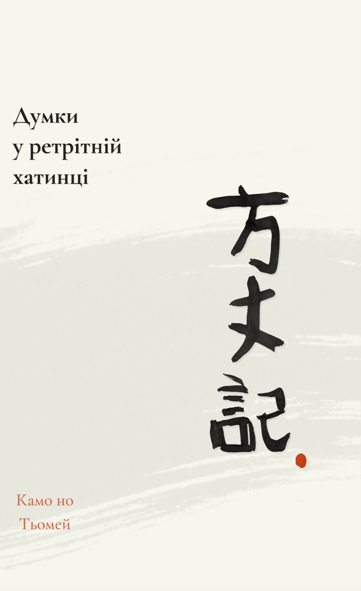

Ця книжка вільна. Якщо вона була вам цінною, ви можете підтримати тих, хто захищає Україну.
Передмова
У буддизмі правильна мотивація — фундамент практики, її найважливіша частина.
Зокрема, розвивають зречення — мотивацію відвернутися від турбот самсари до спокою нірвани. Щоб розвити в собі зречення, практики буддизму медитують на непостійність, страждання самсари, цінність присвячення себе практиці, і закон причинно-наслідкових звʼязків. Саме ці теми розкриває класичний текст, переклад якого я для вас представляю.
Ходзьокі — Думки у ретрітній хатинці — це поема, яку написав Камо но Тьомей у тринадцятому столітті в Японії. Проте вона відчувається дуже актуальною і сучасною, особливо для українців. Відчуття кінця світу, яке так багато людей проживають зараз, — воно було саме таким і за життя автора.
Дійсно, світ при всій своїй непостійності ніскільки не змінюється.
Тим важливіше послання цієї поеми — заклик до спокою, до зосередження на практиці, до слідування Шляхом.
Я щиро бажаю, щоб в Україні розквітала справжня практика Дгарми і були всі умови для неї. Я присвячую свій переклад саме цьому.
Подяка
Дякую Метью Ставросу за чудовий англійський переклад, з якого я працював. Я зустрів його книжку в книгарні, відкрив на випадковій сторінці — і відтоді ось уже шість місяців щоденно до неї повертаюсь. Робота над цим текстом стала для мене справжньою практикою.
Дякую Ані Ігнатовій за вичитку, відгуки і за те, що ти є в моєму житті.
Дякую усім моїм Вчителям Дгарми. Завдяки їхній доброті моє зречення поглиблюється.
Дякую ЗСУ за те, що Україна досі існує.
Зречення
Спочатку зречення було для мене страхом і тугою.Я шукав собі точки опориі дивився, як вони всі розсипалися й танули на очах.
Потім я бачив зречення як процес дорослішання.Я грався в іграшки самсари,і з часом їхній чар і мій інтерес до них стиралися.
Тепер я бачу зречення як бажання спокою.Я ясно бачу, що щастя неможливо знайти ніде,крім як усередині.Все, що я хочу, — це відвернутися від ілюзорного світу.
Артем Онучін
написано під час роботи
над перекладом «Думки у ретрітній хатинці»
2026
Думки у ретрітній хатинці
Переклад з англійської — Артем Онучін

«Ретрітна хатинка»
На фотографії зображена ретрітна хатинка в буддійському центрі Garchen Buddhist Institute серед пагорбів Арізони. У таких хатинках сучасні йогіни роблять трирічні ретріти, у яких вони усамітнюються і присвячують себе практиці. Розмір такої хатинки — три на три метри, саме як ходзьо, ретрітна хатинка самого Камо но Тьомея.
Ця поема — це думки, які автор записав у своїй хатинці. Цілком імовірно, що сучасні йогіни можуть мати схожі думки.
Пролог
Потік ріки ніколи не зникає,вода ніколи не буває однаковою.
Бульбашки пливуть на поверхні течії,лопаються, виникають знові ніколи не тривають.
Вони — як люди і їхні оселі.
У нашій коштовній столиціпрекрасні будівлі стоять у ряд,їхні гребні змагаються за першість.
Доми еліти — ніби були тут вічно,але розпитай — і переконаєшся:дуже рідко трапляються будинкиз довгою історією.
Одного року дім руйнується,наступного — відбудовується,зрештою великі домизмінюються на доми поменші,саме як люди,що живуть у них.
Це місто і громада в ньому здаються незмінними.Проте з поміж двадцяти чи тридцяти людей,яких я знав колись тут,досі залишились один чи двоє.
Ввечері люди помираютьі вже вранці народжуються інші,саме як бульбашки в річці.
Без імені:одні конають, інші народжуються.Звідки і куди вони ідуть?
І всі ці тимчасові, невідомі оселі —для кого і навіщопрагнути їх зробитиприязними для сприйняття?
Господар та його оселя —це як росинка на квітці повію.Хто з них загине швидше?
Часом роса випаровується,а квітка залишається.Та без сумніву квітка звʼянепід ранковим сонцем.
Дуже рідко краплятримається на зівʼялій пелюстці.У будь-якому разідо вечора росинка щезне.
Пожежа в епоху Анґен
За сорок весен і осенейвідтоді, як я зрозумів суть буття,я побачив чимало жахливих речей.
Давно, однієї ночі,зірвався лютий вітер.
Це було в двадцять восьмий день,у четвертий місяць,на третій рік епохи Анґен.1
Вогонь почався на південному сході столиці,ввечері, близько восьмої години.Потім він рушив на північний захід.
Зрештою діставсяВрат Судзаку Імперського Палацу,Великої Зали Держави,Імперського Університету,Міністерства Внутрішніх Справ.
В одну ніч усе це перетворилось на попіл.
Кажуть,пожежа почалася в домі для інвалідівна перехресті вулиць Хіґучі й Томінокодзі.
Вітер вів лихо туди і сюди,живлячи полумʼя, що розійшлось врізнобіч.
На відстані будівлі вкрилися димом.Зблизька земля стала морем горіння.Небо, повне жару,сяяло темно-червоним,відображало пожежу внизу.
Язики полумʼя,погнані вітрами шаленими,стрибали по всьому місту, наче літали.
Ті, кого вони схопили —що вони могли відчувати?
Хтось падав додолу, здоланий димом.Інші зникли миттєво, зʼїдені полумʼям.
Більшість не змогли врятувати навіть себе —що вже казати про їхнє майно.
Стільки втратилося:усі скарби світу стали попелом.
Доми шістнадцяти панів і безліч інших згоріли.Це — третя частина столиці.Декілька тисяч чоловіків і жінокзагинули.Безліч коней та інших тваринпомерли.
Будь-що ми робимо в нашому життіне має жодного сенсу.Проте тратити скарб і багатство на те,щоб збудувати будинкив цій небезпечній столиці —це особлива дурниця.
Примітки
- 1
«Це було в двадцять восьмий день,
у четвертий місяць,
на третій рік епохи Анґен.»В Японії час рахували епохами (нен-ґо) — періодами від кількох місяців до кількох десятиліть. Нову епоху оголошували зі сходженням імператора, а також після лихих знамень чи стихійних лих: вважалося, що зміна назви принесе оновлення.
Анґен тривала з 1175 до 1177 року. Третього її року, про який пише Тьомей, пожежа знищила третину столиці. Далі — смерч, голод, землетрус, перенесення столиці, війна Ґенпей (1180–1185) між Тайра і Мінамото. Назви епох змінюються — Анґен, Джішо, Йова, Ґенрʼяку — але оновлення не приносить жодна.
Глибше розпадався весь лад тогочасного життя. Епоха Хейан (794–1185) — чотири століття правління придворної аристократії; життя оберталося навколо столичного палацу, поезії, церемоній, естетичних тонкощів. Цей світ доживав останні роки. На зміну йшла інша Японія — військова, провінційна, з самураями як новою панівною верствою. Після перемоги Мінамото у війні Ґенпей запанував сьоґунат — військове правління, що тривало майже сім століть.
Тьомей жив на цьому зламі. Те, що ми бачимо як чіткий історичний рубіж, він проживав щодня: світ, у якому він народився і виріс, руйнувався на очах. Звідси наскрізне відчуття непостійності. Він пише понад сорок років по тому, але описує пережите: застав ці події юнаком і зрілим чоловіком, бачив згарища і трупи на вулицях.
↩ повернутися